← 返回阅读库 · 原论文目录
论文讲解阅读文档 · 多模态语言模型 · v037
BLIP: Bootstrapping Language-Image Pre-training for Unified Vision-Language Understanding and Generation
视频时长 00:11:25；讲解文字 5,751 字符；提取讲解画面 21 张。按视频原顺序阅读，每段文字保留时间戳。
文字来自整段视频的自动语音转写，按自然停顿分段，并与 PPT / 论文页面 / 演示画面对齐。未将讲解压缩为摘要；术语、数字和口述公式请结合画面及原论文核对。 阅读稿已校正规范部分明确术语误识别；原始逐字稿和每处修改记录另行保留。
讲解画面为源视频截图（640×360），不是可编辑 PPT 文件。全片按每秒 2 帧扫描内容变化，逐步展开页保留；连续动画保留代表画面。清晰度受源视频限制。
下载完整资料包 · 含离线 HTML、PDF、Word、全部 PPT 画面和字幕。
原论文与材料
BLIP: Bootstrapping Language-Image Pre-training for Unified Vision-Language Understanding and Generation · 下载完整 PDF（12 页）
按时间阅读
00:00:00–00:00:42 · 画面 001
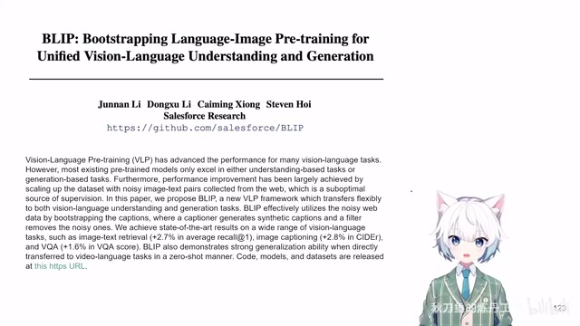
00:00:00–00:00:42 · 画面 001大家好啊今天我们来快速数一篇论文 BLIP: Bootstrapping Language Image Pre-training for Unified Vision Language Understanding and Generation 这篇呢就是我们之前介绍的这个 ALBEF: Align Before Fuse 直接的延伸那么这篇强调的重点呢也是很明确一个就是 Bootstrapping我们通过在 noisy 的数据上训练好的模型去清洗这个数据集，然后呢来不断的改善我们数据集的质量，最终的改善我们模型的质量，这是一个思路。第二个呢就是这个 unified understanding 和 generation，我的这个模型它既可以作为一个 encoder 来提取 feature，也可以作为一个 decoder 去真正的生成文本。那么这两点呢就是本文的核心的贡献。
00:00:42–00:01:15 · 画面 002
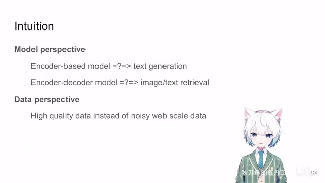
00:00:42–00:01:15 · 画面 002那么与这个贡献相对应的，那本文的 intuition 呢就是在当时的那个年代，从模型的角度来看，要么呢是 encoder based 的模型只能做这些提取 feature 这样的任务，它没法收成文本如果是加上 decoder 这样的模型呢，它的 feature 提取的能力呢，就没有那么突出没法做这个 image text retrieval这样的任务这些需要好的 representation 的任务，这是一个方面另一个方面呢就是你直接从网上扒下来的这个数据，它实在是太 noisy 了
我们期望有一个好的方法，能把这个数据清理一下，那么这两点呢就跟本文的贡献对应了，
00:01:15–00:02:40 · 画面 003
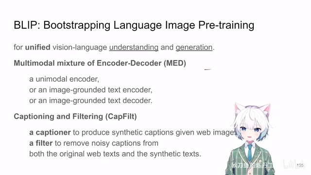
00:01:15–00:02:40 · 画面 003第一个呢就是这个 unified vision language understanding and generation我现在呢用了一个 multimodal mixture of encoder and decoder那这个模型呢提供了三种运行的方式，一种呢就是分别的文本的 feature，image 的 feature这样都可以提 feature那么第二种呢就是我可以把这个文本和图像的 feature，结合起来提一个共同的关于这个 image text pair 的 feature
那么第三个呢就是这个 decoder我可以根据文本根据图像去生成更多的文本，而本文最巧妙的地方在于，虽然这一个模型里面，包含这三种模式但是这三种模式使用的参数，大部分都是通用的，这是模型上关于 unified understanding and generation。那么第二点就是数据层面上引入一个 captioning and filtering。你看我们上面这个模型它可以针对文本图像提 feature，它也可以根据文本和图像去生成新的文本，正好我们可以用这样的功能去把我们已经有的图像重新再去生成一系列的文本，这个是 captioner。然后再用我们的模型去判断一下生成的文本的质量，
包括原来有的这些文文的质量对吧，他们的质量究竟怎么样，这样子你就可以清理出一个新的更干净的数据集，然后用新的数据集去把模型再重新训练一遍，得到一个应该质量更好的一个模型，这个就是 bootstrapping 的部分
00:02:40–00:02:41 · 画面 004
00:02:40–00:02:41 · 画面 00400:02:41–00:02:50 · 画面 005
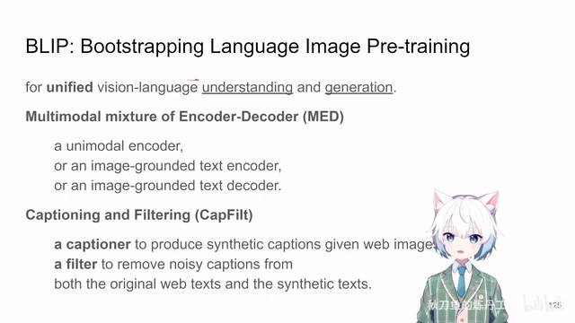
00:02:41–00:02:50 · 画面 005左脚踩右脚那么这个就是本文的核心的贡献，那么下面我们就来看，MED 相比于之前的 ALBEF它有什么区别
00:02:50–00:03:56 · 画面 006
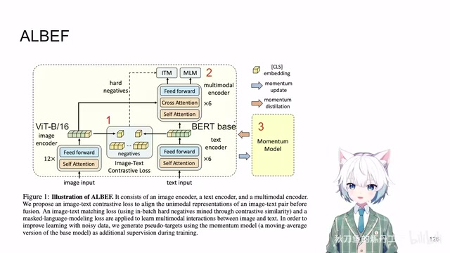
00:02:50–00:03:56 · 画面 006那么这个是 ALBEF我们一个快速的回顾，就是你看它有 Vision Encoder ViT Base 12 层然后文本上用了 BERT BERT 它原来有 12 层这里作者把它拆开前 6 层，作为 Text Encoder后 6 层作为 Multimodal Encoder就是它把文本和图像融合起来，那么当你一个图像和文本的对进来之后，各自提 Feature有的 Classification Token做第一个 Contrastive Loss然后经过 Cross-Attention 融合之后
做两个 Loss一个是判断文本和图像是不是匹配一个 Classification Loss然后你把这个文本像 BERT 一样Mask 掉一部分去 Predict 被 Mask 的 Token这也是 ALBEF 的第二个贡献第三个贡献就是 Momentum Encoder就是你在做 Contrastive Learning 的时候还有 Mask Token Prediction 的时候这两个 Loss跟我们 Momentum Network 提供的 Target它产生了一个 Loss
做一个融合相当于把 Momentum Model 的知识征流到我们 Online Model 里面这个就是 Align Before Fuse之前我们的视频里面已经比较详细的说过这个事情了那么在此基础上BLIP 做的工作
00:03:56–00:05:11 · 画面 007
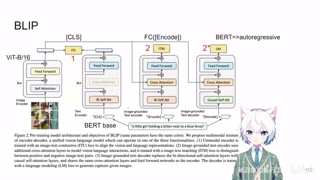
00:03:56–00:05:11 · 画面 007我们首先来看到它网络结构还是使用了 VIT Base 12 层和 BERT Base 12 层图像这块没有什么变化但是 BERT 这块这次 12 层网络不再分开了我们把这 12 层网络即视为一个 Encoder一个标准的 Transformer 的结构 12 层同时同样的参数我们再引入了 Cross Attention Module你的 BERT Base 可以兼容视觉的这些 Token 的输入怎么兼容就是用 Cross Attention那么这样子一串下来你就可以提到一个 Feature
这个 Feature 应该包含图片和你输入的文本共同的信息这是第二种配置那么再往后我们还想要这个模型是一个 Decoder它能够生成文本生成文本现在的套路就是 Auto Regressively根据我们的根据我们已经有的 Sequence做 Next Token Prediction这个时候作者做的事情就是把原来大家都能看到的Self Attention 换成 Cross Attention因为你过去的 Token不能和未来的 Token 做 Attention对吧你也不知道未来是什么
这里作者对这个 Self Attention进行了一个替换它不仅仅是更改一个 Mask 这么简单它把里面的参数权重也都独立出来了你在做 Decoding 的时候是用了额外的一套 Self Attention 的权重而这些 Cross Attention Feed Forward 这些东西都是一样的
00:05:11–00:05:12 · 画面 008
00:05:11–00:05:12 · 画面 008那么这个就是 BLIP 模型
00:05:12–00:07:12 · 画面 009
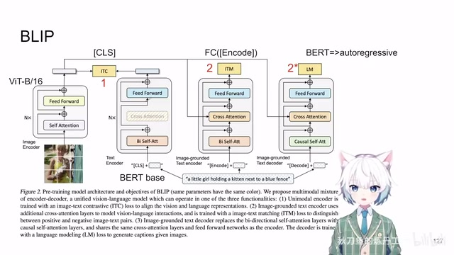
00:05:12–00:07:12 · 画面 009一个 Vision Encoder一个 Text Encoder但是 Text Encoder 有三种不同的配置那么这三种不同的配置设计出来就是为了跟之前 ALBEF它的三种 Loss 一一对应的我们首先来看第一个就是 Contrastive Loss Image Encoder提出来一个 Classification Token和你的 Text Encoder 提出来 Classification Token做 Contrastive Learning这些东西跟原来是一样的但是只不过 ALBEF
它是用了 6 层的 Transformer 来提 Text Feature这里你是用了整个的 BERT 模型 12 层这个是 Contrastive Loss你加上这些 Momentum Distillation跟原来是一模一样的那么第二点我们还是有一个 Classifier对吧我们要判断我们当前的图像和文本是不是匹配这个时候我们注意看它的输入的数据我们的输入不再是像 BERT 一样由这个 classification token 起手再加上下面的文本了这里呢作者针对这个任务新定义了一个叫做 encode token 反正就是特殊的 token 跟 BERT 一样我用不同的 token 来去区别我要做的任务是什么那这一个特殊的 token 加上你的文本和你的图像一起送到这个网络里面过这个 cross attentioncross attention 就把这两个 domain 的数据融合起来嘛然后你就做最后呢你输出了一系列 token 那么这个时候呢作者取到这个 encode token 也就是
第一个 token 对应位置上的这个这个 feature 放到一个全连接层里面来去做一个二分类来判断这个文本和图像是不是匹配的。那么这个配置跟原来也是一模一样的。那么最后呢我们来看到这个文本生成的部分啊，这个呢就跟过去很不一样了。那这里呢因为我们是做了一个文本生成的任务，所以啊他这里把一开始的 token 换成了另外一个 decode token 啊，反正就是你词典里面加一个特殊的 token，这个 token 也是自己学习得来的嘛。然后呢你就把这一整句话加上前面这个 decode token 送到你的这个网络里面
那这个时候呢我们因为是做 auto regressive 的方法这里呢做这个 causal self-attention我们之前也说过它的权重跟这个 self-attention 是不一样的这是作者特意设计的不是改一个 mask 这么简单然后呢你就这一个序列扔进去
00:07:12–00:07:27 · 画面 010
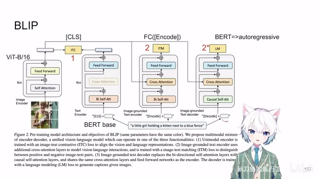
00:07:12–00:07:27 · 画面 010得到一串长度相同的 token那这个 token 区别于 bert那 bert 里面你 token 的位置是不变化的但是在这里呢因为你是做 auto regressive next token prediction所以你预测出来的 label 要向前挪一位然后呢你就计算一整个序列的这个 cross entropy loss
00:07:27–00:07:54 · 画面 011
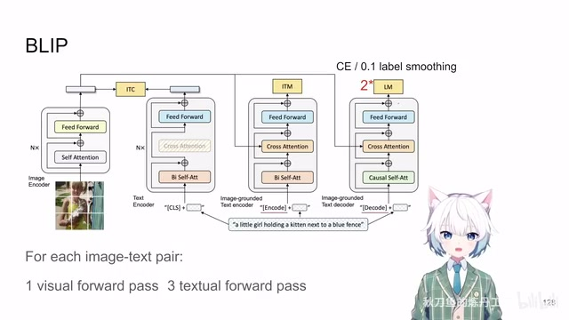
00:07:27–00:07:54 · 画面 011这里还做着还加了 label smoothing这样的一个 loss 就把我们生成的任务给它训练出来了它就是在 loss 层面上本文相对于之前的 ALBEF 唯一的区别那么当然总的 loss 也是这三个 loss 加起来了然后呢我们想一想当我们拿到一个图像文本对的时候我们只需要把图像过一遍这个 vision encoder然后呢文本根据你三个任务不同的任务分别过一次这个 text encoder这样子呢你就可以算出一套
00:07:54–00:07:56 · 画面 012
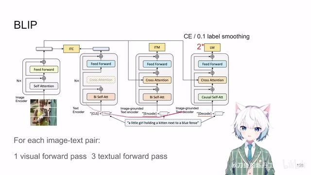
00:07:54–00:07:56 · 画面 012完整的 loss 了
00:07:56–00:07:57 · 画面 013
00:07:56–00:07:57 · 画面 013那么总结一下对比于之前的这个 ALBEF
00:07:57–00:08:58 · 画面 014
00:07:57–00:08:58 · 画面 014首先是模型结构的更改原来你的 ALBEF 想要生成文本还需要额外的再加 decoder 再去训练那现在好了你的 encoder 就是你的 decoder如果你有图像再把这个 cross attention 加上然后不同的任务靠第一个特殊的 token 来区分然后 encoder 和 decoder 唯一的区别参数上的区别就是你前面的这个 self attention用的是不同的这个参数然后这个 contrastive loss 跟 classification loss对吧这个都是一模一样的
那最后呢这个 language decoding 的时候就不再是原来的 BERT而是这个 next token prediction 这样的一个 cross entropy那么这个时候呢注意我们就不再使用 momentum decoder 了就是一个很直接的 cross entropy一个现代大语言模型训练的一个范式就这样就结束了那么这个就是本文相对于前作在模型设计上这个训练还有这个 loss 计算上最主要的区别那当然还有一些小的细节比如说这个 alpha你的这个 moe 跟你正经的这个 loss 混合的这个比例
从零开始随着训练逐渐增大的这都是小的细节下面呢我们来看一下它在数据清理上的设计
00:08:58–00:10:31 · 画面 015
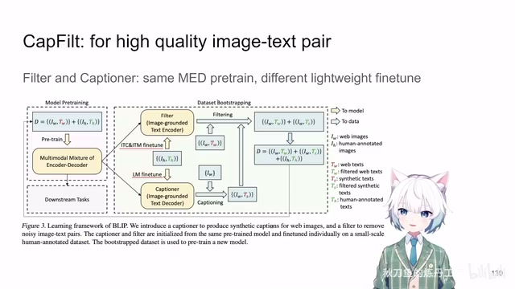
00:08:58–00:10:31 · 画面 015正如我们之前介绍的这个模型它既可以做 encoding 提 feature也可以做 de-coding 去生成文本所以呢这里作者就正好把它拿过来用我们现在一开始先爬到了一个很 noisy 的网络级别的图像还有一些很Noise 的文本对去训练一个我们这个现代的 MED 模型然后呢用这个 language modelnext token prediction 这个 laus 去翻存一个 decoder 这个叫 captioner那么注意这个翻译的过程是在很少量人类标注的图像文本对这些高质量的数据上进行的那么调出来这两个模型之后我们就可以真正去使用这两个模型我把网络级别的图像的数据拿到 captioner 里面让它去给我们生成文本对来判断我们生成的文本对跟这个图像是不是真正的匹配
这是一点同时我们也可以把我们已经有的网络上的这些图像跟网络上对应的这些文本拿出来也让 filter 看一看它俩是不是真正的匹配那么这两个数据集加起来让我们的 filter 来清理一下那么最终我们就洗出来一个质量相对更高的这样一个图像跟文本的配对那么拿到这样的一个数据集之后我就可以再用这样的数据集重新训练一个我们的 MED 模型然后你如果高兴的话这个流程你可以一遍一遍的走就是一个 bootstrapping 的过程改善我的数据集同时改善我的模型的一个作用那当然你说这个套路很新吗
也不是很新就比如说某个叫 robotcast 项目对吧把 bootstrapping 拿出来作为贡献屡试不少好的那么以上就是本文主要的技术的贡献了
00:10:31–00:10:40 · 画面 016
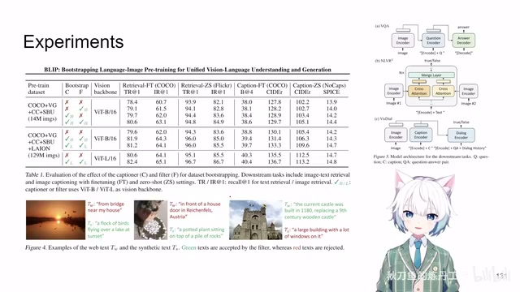
00:10:31–00:10:40 · 画面 016下面我们来看一点实验那这里呢你看到有不同的 vision backbone 的大小然后重点是你的 bootstrapping captioner 和 filter它们的作用那么这是一些数据
00:10:40–00:10:41 · 画面 017
00:10:40–00:10:41 · 画面 017其他的还有更多详细的实验
00:10:41–00:11:05 · 画面 018
00:10:41–00:11:05 · 画面 018感兴趣的朋友呢非常推荐你到原文查看。那么注意还有这个图。对吧我们在做下游的任务的时候，比如说 vqa 的时候我们生成一个答案的时候，那原来你在 ALBEF 的时候，你必须再额外的加一个 decoder。再去翻退那现在非常方便了。现在科技发达了对吧你只需要把这个 decode token交给你的 decoder然后呢它就会从它为话头。
去生成你的 answer好的
00:11:05–00:11:14 · 画面 019
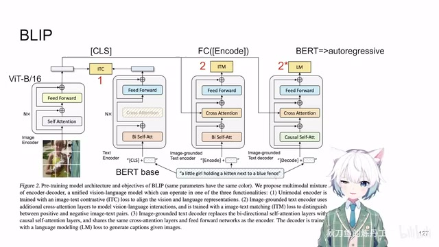
00:11:05–00:11:14 · 画面 019那么以上就是我对这个文章的一个非常快速的整理那么我们下面的视频就是 BLIP-2 了。那么有机会的话我们也可以聊聊 miniGBD这样的工作你就可以很清楚的看到，
00:11:14–00:11:24 · 画面 020
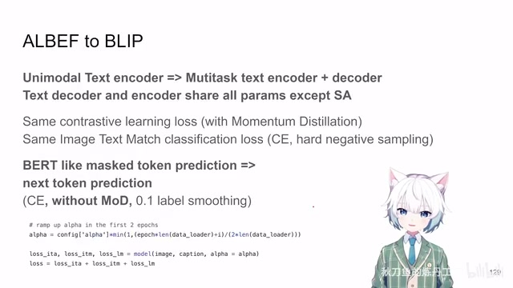
00:11:14–00:11:24 · 画面 020这些技术是怎么样一脉相承。发展下来的好的那么以上就是我对这个文章的一个非常快速的整理那么感谢您的收看。请多多指点
00:11:24–00:11:25 · 画面 021
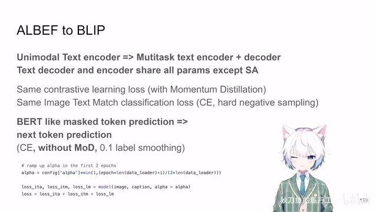
00:11:24–00:11:25 · 画面 021转写与来源说明 · 12 个自动复核提示
保留 286 个原始语音片段，12 个片段触发自动复核提示。提示仅用于定位可能的术语、重复或识别问题，不等于已确认错误。
讲解画面为源视频截图（640×360），不是可编辑 PPT 文件。全片按每秒 2 帧扫描内容变化，逐步展开页保留；连续动画保留代表画面。清晰度受源视频限制。
原视频：paper/合集_2026-10-16_多模态语言模型/[论文速览]Bootstrapping Language-Image Pre-training...[2201.12086].mp4
SHA-256：770707f8bef5adb1047b453a089b6f7e58ec060314b8307a660b5a1d6bda737b
就是这个 unified vision language understanding and generation
就是你在做 Contrastive Learning 的时候
我们再引入了 Cross Attention Module
就是用 Cross Attention
做 Next Token Prediction
Self Attention 换成 Cross Attention
而这些 Cross Attention
做 Contrastive Learning
这个是 Contrastive Loss
这里呢做这个 causal self-attention
然后这个 contrastive loss 跟 classification loss
而是这个 next token prediction 这样的一个 cross entropy
全文按视频语音与画面制作。原论文可从上方链接下载；完整资料包保留全文、原始逐字稿、字幕和校对记录。